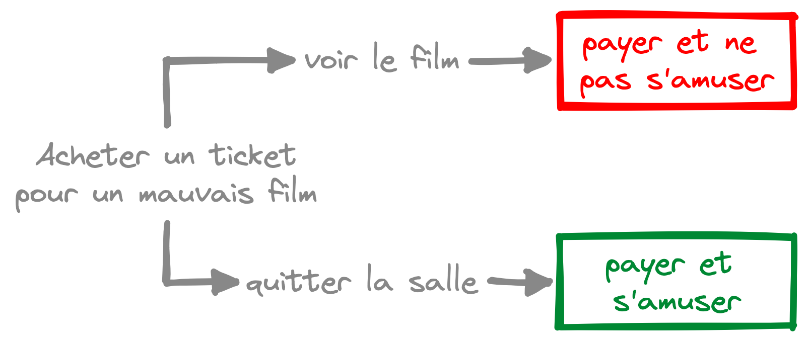
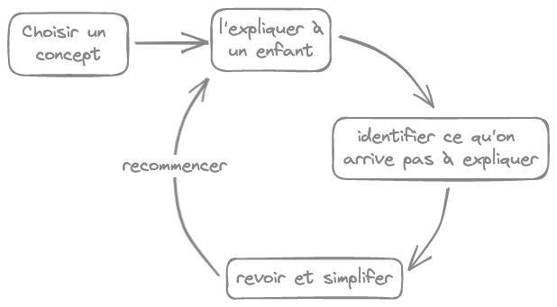
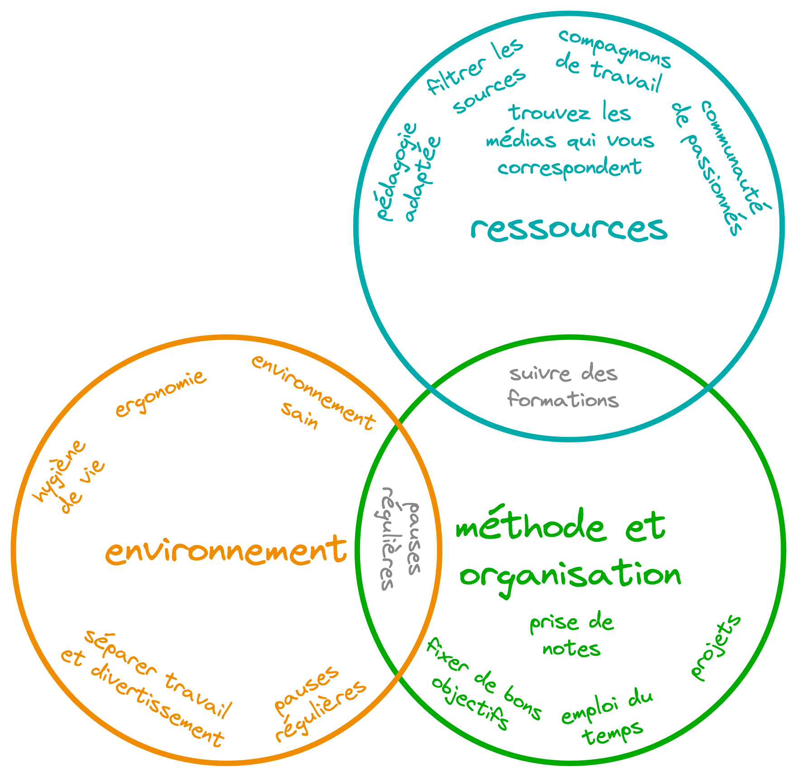

:techniques pour mieux apprendre
Lorsqu’on apprend quelque chose de nouveau, il faut choisir les bonnes :ressources pour apprendre, mais aussi trouver une :méthode de travail efficace.
Il faut aussi garder une bonne :hygiène de vie et un bon :environnement de travail
:x-ressources-pour-apprendre
Utilisez des livres, des articles, des sites internet, des :formations en ligne, des :formations académiques (université, BTS…)… choisissez le média qui vous correspond, et une :pédagogie adaptée.
Apprenez à :filtrer les sources.
Des ressources pertinentes, bien ciblées, évitent de perdre du temps.
I est également utile de :trouver des compagnons de travail, voire une :communauté de passionnés. Ceci dit, :travailler seul est aussi possible
:x-filtrer-les-sources
Internet est très vaste, ce qui peut être décourageant. Tout n’est pas bon à prendre, il faut savoir se méfier (y compris de l’article que vous êtes en train de lire).
:x-formations-en-ligne
Beaucoup de formations en ligne sont très bien faites, avec des exercices, une pédagogie réfléchie…
Il existe beaucoup de formations gratuites, mais le fait de payer est une motivation pour aller jusqu’au bout d’une formation.
Cela est en partie dû au :biais du coût irrécupérable
:x-biais-du-cout-irrecuperable
Le biais du coût irrécupérable est la tendance qu’ont les individus à être influencés par des investissements (financiers par exemple) faits dans le passé, de façon irrationnelle.

Par exemple, si vous êtes au cinéma et que vous n’aimez pas le film, la décision rationnelle serait de sortir de la salle. Mais la plupart des gens resteront, car ils ont dépensé de l’argent pour le ticket. Pourtant, cet argent est dépensé quoi que l’on fasse, on a le choix entre avoir acheté un ticket et voir un mauvais film, ou bien avoir acheté un ticket et s’amuser dehors !
Ce biais, qui fait que nous ne prenons pas la décision la plus rationnelle, est le biais du coût irrécupérable.
:x-formations-academiques
Les formations académiques ont plusieurs avantages :
- un cadre qui peut être plus confortable
- un diplôme (qui a plus ou mois de valeur selon les domaines)
- des :camarades, ce qui est motivant
- des professeurs
- ils ont une connaissance profonde du sujet
- ils peuvent vous aider, répondre à vos questions
- ils ont de l’expérience sur le sujet qu’ils enseignent
:x-aimer-son-professeur-et-son-enseignement
La pédagogie doit vous corresponde pour que l’apprentissage soit agréable.
Il faut “apprendre à aimer” un enseignement, en analysant correctement et en :prenant des notes intelligentes
:x-trouver-des-compagnons-de-travail
L’entraide est une manière agréable d’apprendre. S’aider mutuellement permet de garder la motivation et est très gratifiant.
:Expliquer et formuler des concepts aux autres permet de bien intégrer son apprentissage.
:x-methode-feynman
C’est une partie de la méthode Feynman : le meilleur moyen de comprendre quelque chose est de l’expliquer, car si vous n’arrivez pas à l’expliquer simplement, c’est que vous ne le comprenez pas assez bien
Une des idées de cette méthode est d’expliquer (de façon imaginaire) à un enfant de 12 ans ce qu’on cherche à bien apprendre. Cela permet d’identifier ce qu’on a pas bien compris : il faut retravailler les éléments que l’on n’arrive pas à expliquer.

:x-trouver-une-communaute
Il est très utile de trouver des communautés de gens intéressés par le sujet que vous apprenez, par exemple des forums internet, des groupes Reddit, des serveurs Discord…
Une communauté de passionnés permet :
- d’avoir des réponses rapides et des conseils efficaces sur des questions particulières
- d’avoir des conseils efficaces pour mieux apprendre
- de partager des concepts et des idées
- élaborer de nouvelles idées
- vous donner un éclairage sur des parties floues de votre apprentissage
- discuter avec des passionnés, ce qui est très motivant
:x-travailler-seul-est-aussi-possible
Être seul n’est pas la fin du monde. Il faut simplement avoir de l’autonomie (étymologiquement : se fixer ses propres règles), avoir une bonne :méthode de travail
:x-hygiene-de-vie
Avoir une bonne hygiène de vie est important pour être efficace. Bien dormir, faire de l’exercice physique et ne pas rester enfermé chez soi sont des choses simples qui ont beaucoup d’impact.
Faire des :pauses régulières permet aussi de travailler plus longtemps sans se déconcentrer.
:x-pomodoro
La méthode pomodoro consiste à diviser son travail en cycles de 25 minutes séparés par de courtes pauses : travail 25 min, pause 5 min, travail 25 min, pause 5 min…
Cette technique permet de travailler plus longtemps et efficacement, en restant concentré.
Pendant les pauses, vous pouvez faire des étirements (pour ne pas rester statique trop longtemps), lire un livre qui vous plaît, boire un café…
:x-environnement-de-travail
Faites attention à votre environnement de travail, il est aussi important que les :ressources que vous utilisez.
Vous devez garder un environnement :sain. Il faut aussi :séparer les environnements de travail et de divertissement
:x-environnement-sain
- une pièce aérée
- une bonne luminosité
- faire attention à l’ergonomie, notamment si vous travaillez sur un ordinateur
:x-separer-travail-et-divertissement
- séparer les environnements de travail et de divertissement
- vidéo sur la séparation des environnements (en anglais) : CGP Grey - Spaceship you
- avoir un bureau bien rangé
- éloigner la nourriture, le téléphone, les objets distrayants…
- boire de l’eau est une alternative au grignotage
- éloigner la nourriture, le téléphone, les objets distrayants…
- rester concentré en évitant toute distraction durant les phases de travail
- fermer les pages du navigateur et les applications qui n’ont rien à voir avec votre projet
- des logiciels permettent de faire cela (bloquer certaines applications pendant le travail, avoir plusieurs environnements de navigateur, un pour le travail, un pour le divertissement)
- ==TODO : liste de logiciels==
:x-methode-d-apprentissage
Avoir de bonnes méthodes permet d’apprendre mieux et plus vite.
Définissez-vous un :emploi du temps. Fixez-vous :de bons objectifs. Commencez par :apprendre ce que vous aimez. Faites des :projets (surtout pour apprendre la programmation).
Prenez des :notes.
:x-emploi-du-temps
- se fixer un emploi du temps pour apprendre (choisir des moments dédiés à notre apprentissage)
- la régularité aide à rester motivé et à garder une cadence efficace
- espacer son apprentissage dans le temps
- essayer de tout apprendre d’un coup est vain et décourageant
- cela permet de mieux mémoriser, c’est la répétition espacée
- essayer d’apprendre trop vite peut être décourageant, il faut du temps à votre cerveau pour intégrer les choses
- il ne faut pas être trop impatient
:x-se-fixer-de-bons-objectifs
des objectifs SMART :
- Spécifique (clairement défini)
- il doit être clairement défini
- Mesurable
- il doit être facile de savoir quant l’objectif est atteint
- Atteignable
- des objectifs trop difficiles brisent la motivation (on ne pense pas pouvoir y arriver)
- Relevant (comprendre pertinent, vient de l’anglais relevant)
- il faut que l’objectif soit utile
- des objectifs trop simples ne sont pas gratifiants (on a l’impression de ne pas avancer)
- Temporel
- doit avoir une date buttoir, pour éviter la procrastination
- attention à fixer une date atteignable !
- Spécifique (clairement défini)
des formations (livres, :formations en lignes, écoles) donnent des objectifs bien pensés
une pensée :stoïque peut aider
:x-stoicisme
La pensée stoïque peut être résumée à :
- ne pas essayer d’agir contre ce qu’on ne contrôle pas
- faire son possible pour changer ce que l’on peut
- agir sur les causes directement, et non sur les conséquences
:x-commencer-par-ce-quon-aime
Il faut commencer par travailler sur ce qu’on aime, ce que l’on connaît déjà
- il est beaucoup plus facile et motivant de travailler dans une direction qu’on aime (par exemple : apprendre la programmation en fabriquant un petit jeu vidéo)
- utiliser ce qu’on a déjà appris, ce qu’on maîtrise déjà, pour ne pas repartir de zéro
- mélanger les apprentissages
:x-faire-des-projets
- les projets sont très formateurs, ils permettent de mettre en applications vos connaissances
- faire des miniprojets : de petits projets qui permettent de s’entrainer
- bien se préparer avant de se lancer dans un projet
- bon cahier des charges (bien définir ce qu’on veut faire)
- vérifier qu’on maîtrise les outils nécessaires
- demander à une communauté si notre idée est pertinente
- peut-être que quelqu’un l’a déjà fait
- peut-être que quelqu’un a déjà essayé, et peut vous dire ce qui est à éviter, ce qui est le plus difficile
- peut-être qu’un aspect qui vous paraît évident ne l’est pas
- multiplier les points de vue est toujours bon
:x-prise-de-notes
Bien prendre des notes permet de préserver notre apprentissage.
- apprendre par cœur n’aide pas. Il faut :
- analyser (comprendre entièrement)
- découper (séparer les concepts)
- trouver les liens entre les concepts
- reprendre les idées avec ses propres mots
- développer ses propres idées autours des concepts appris
- les buts de vos notes sont :
- garder les informations importantes
- retrouver rapidement un concept
- pouvoir créer quelque chose (comme écrire un article)
- j’utilise :la méthode zettelkasten et les notes liées avec l’application obsidian
:x-zettelkasten
La méthode zettelkasten est un système de prise de notes qui consiste à créer des notes atomiques, et liées.
- atomiques : les notes doivent parler d’un seul concept (les atomes sont indivisibles, vos notes doivent l’être aussi). Si une note parle de 2 sujets, on doit la séparer en plusieurs notes
- liées : les concepts reliés doivent être reliés dans vos notes (avec des liens cliquables)
- les liens peuvent créer une hiérarchie
- les liens peuvent rapprocher des concepts similaires
- les liens améliorent la navigation (on saute de note en note en cliquant)
- les liens ont du sens : les concepts ont plus d’intérêt si ils sont reliés
Voici un article sur la méthode Zettelkasten : Méthode Zettelkasten : Comment prendre des notes utiles ?
:x-carte-mentale
